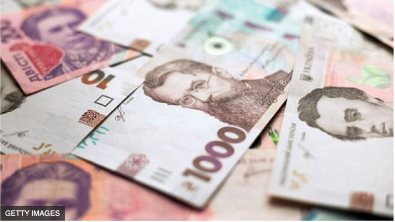
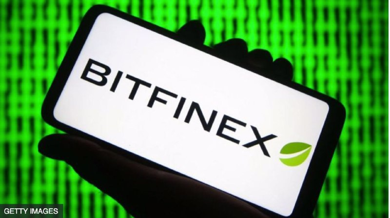
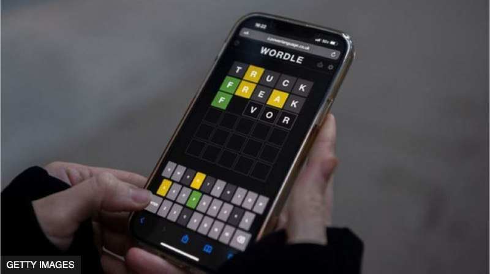
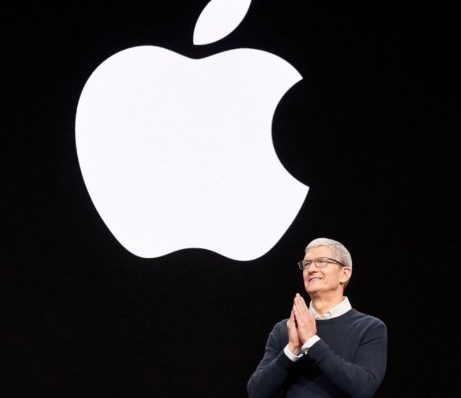
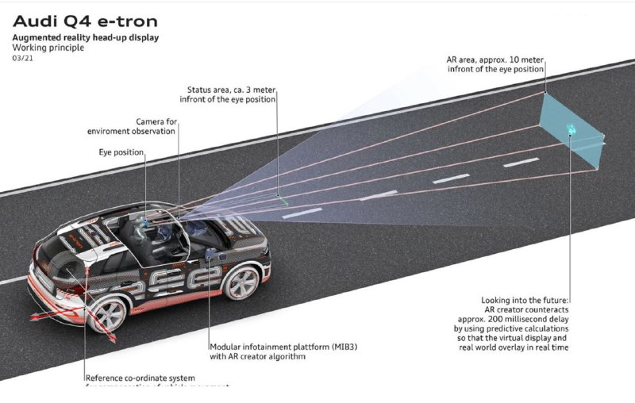

500 грн за бустер на підході. Кому дозволять витратити гроші на ліки і комуналку
Кабмін розширив президентську програму єПідтримка виплатою 500 грн за бустерну дозу вакцини проти коронавірусу.
"Ці зміни почнуть працювати з 14 березня цього року", - уточнив прем'єр Денис Шмигаль.
Кабмін також вирішив подовжити строк, коли можна отримати "ковідну допомогу", із чотирьох до дев'яти місяців.
За словами голови уряду, старші за 60 років українці та люди з І та ІІ групами інвалідності зможуть витратити ковідні кошти на ліки та оплату комунальних послуг. Вже у цьому місяці, пообіцяв прем'єр.
Раніше уряд дозволив людям, старшим за 60 років, витрачати 1 000 грн за вакцинацію на придбання ліків. Проте поки що "ковідну допомогу" можна отримати лише через систему "Дія" на віртуальну картку.
Крадіжка ХХІ сторіччя: правоохоронці повернули $5 млрд у біткоїнах
Міністерство юстиції США повідомило про конфіскацію біткоїнів на понад 5 млрд доларів. Наразі це є рекордом у кримінальних справах, пов'язаних із криптовалютами.
Правоохоронці висунули звинувачення і затримали двох осіб, яких підозрюють у відмиванні коштів - близько 120 000 біткоїнів.
Вони були вкрадені хакером, який зламав біржу криптовалют Bitfinex ще у 2016 році. Тоді ці біткоїни коштували 71 млн доларів.
За ці роки курс зріс настільки, що вкрадені активи коштують близько 5 млрд доларів.
Уряд "не дозволить криптовалютам бути інструментом для відмивання коштів чи поза законом", заявив заступник генерального прокурора Кеннет Полайт.
Попереднім рекордом у світі кіберзлочинів вважають 2,3 млрд доларів викупу у криптовалюті, які компанія Colonial Pipeline сплатила хакерам за те, щоб вони припинили кібератаку.
Вірусну онлайн-гру Wordle продали за семизначну суму
Американська газета New York Times оголосила про купівлю популярної онлайн-гри Wordle.
Суму угоди не розкривають. У виданні сказали лише, що йдеться про семизначну суму.
Онлайн-гра стала доступна для користувачів у жовтні минулого року і за кілька місяців стрімко набрала популярності.
Якщо ще на початку листопада кількість користувачів Wordle не перевищувала сотні, то вже в середині листопада в неї грали понад 300 тисяч людей.
Зараз аудиторія гри становить кілька мільйонів і продовжує швидко зростати.
Автор гри, програміст Джош Вордл повідомив, що працює над перенесенням гри зі свого сайту PowerLanguage на сайт газети.
Пандемія і магія. Apple стала першою компанією, вартість якої перетнула $3 трлн
Американський технологічний гігант Apple став першою компанією, ринкова вартість якої сягнула 3 трлн доларів.
Відтоді, як у 2007 році засновник і колишній голова компанії Стів Джобс вперше представив iPhone, ціна акцій Apple зросла на 5 800%.
"Досягнення позначки у 3 трлн доларів - ще один історичний момент для Apple, яка вчергове засвідчила хибність прогнозів своїх критиків", - каже аналітик Wedbush Ден Івз.
При цьому шлях від вартості у 2 трлн доларів до 3 трлн доларів компанія подолала лише за 16 місяців. Під час пандемії та карантинів смартфони, планшети та ноутбуки продавалися мов гарячі пиріжки. Apple належить до компаній, які найбільше виграли від пандемії.
При цьому шлях від вартості у 2 трлн доларів до 3 трлн доларів компанія подолала лише за 16 місяців. Під час пандемії та карантинів смартфони, планшети та ноутбуки продавалися мов гарячі пиріжки. Apple належить до компаній, які найбільше виграли від пандемії.
Половина виторгу компанії припадає на продажі iPhone, хоча попит також мають iPad та ноутбуки.
"Дочка" Samsung придбала український стартап
Дочірнє підприємство Samsung Electronics, компанія HARMAN International, купило український стартап Apostera.
Про це повідомляє dev.ua.
Apostera розвиває технології доповненої реальності в автомобілях. Її ідеєю було лобове скло авто як проєкційний дисплей. Мета – допомагати водієві орієнтуватися на дорозі.
У 2018 році Apostera стала постачальником для Audi. Електрокар Audi Q4 e-tron з проєкційною навігацією офіційно представили навесні 2021 року.
За даними Forbes, у 2019 і у 2020 роках виторг стартапу був на рівні 4 млн євро, а у 2021 мав збільшитися на 50%.
CEO Apostera – Андрій Голубинський, який має 15-річний досвід у галузі automotive, CTO – Віктор Здобніков, має 12 років досвіду в computer vision, AR.